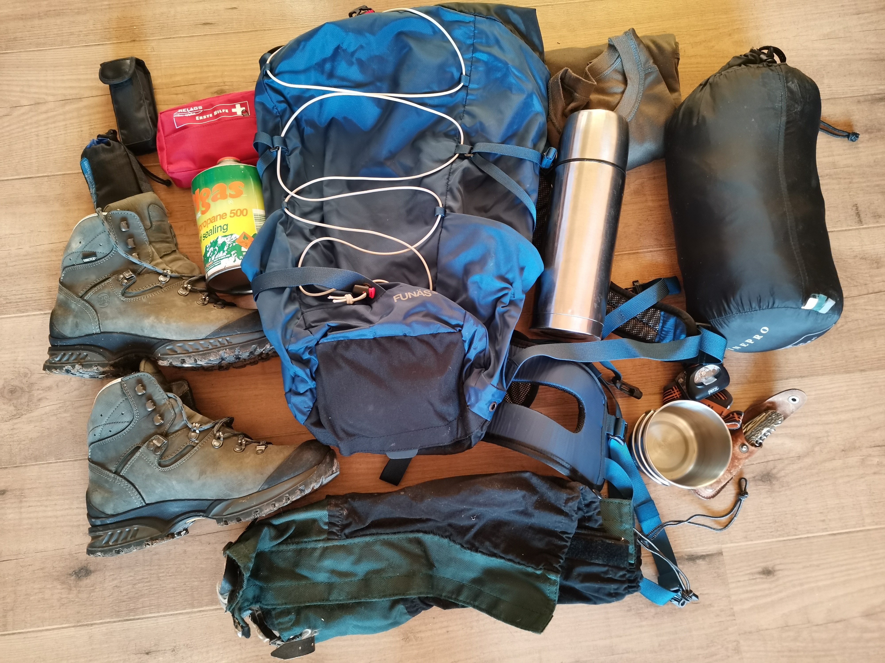
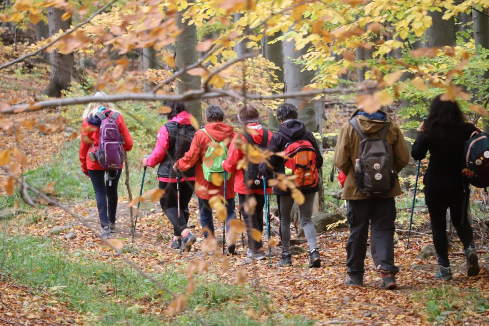

Hasznos túratippek
A Spartacus-ösvény nagyon szép kirándulóhely, de szerintem fontos, hogy megfelelően felkészüljünk a túrára.
Mivel az útvonalon keskeny és meredek szakaszok is vannak, nem érdemes teljesen felkészületlenül elindulni. Én mindig figyelek arra, hogy kényelmes cipő legyen rajtam, és legyen nálam elegendő innivaló.
Mit vigyünk magunkkal?

Egy hosszabb kirándulás előtt érdemes összekészíteni a legfontosabb felszereléseket.
Amiket én ajánlok:
- Kényelmes, csúszásmentes túracipő
- Elegendő ivóvíz
- Szendvics vagy más ennivaló
- Feltöltött telefon
- Offline térkép
- Esőkabát
- Kisebb hátizsák
Mikor érdemes túrázni?

Szerintem a Spartacus-ösvény tavasszal és ősszel a legszebb. Ilyenkor általában kellemesebb a hőmérséklet, és az erdő is nagyon hangulatos.
Nyáron a nagy meleg miatt érdemes korábban elindulni. Télen pedig a hó és a jég miatt sokkal óvatosabbnak kell lenni.
Mire figyeljünk az útvonalon?
A Spartacus-ösvény bizonyos részei keskenyek, ezért fontos az óvatosság. Nem szabad sietni, különösen a meredekebb szakaszokon.
Fontos szabályok:
- Maradjunk a kijelölt turistaúton!
- Ne szemeteljünk!
- Vigyázzunk a növényekre és az állatokra!
- Csúszós terepen haladjunk óvatosan!
- Figyeljük az időjárást!
- Ne induljunk el túl későn!
Szerintem a legfontosabb, hogy ne csak a célra figyeljünk, hanem élvezzük magát a kirándulást is.